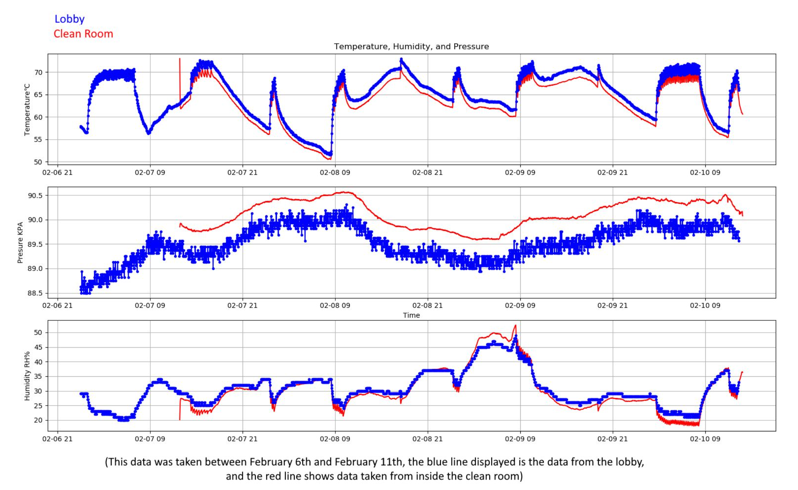
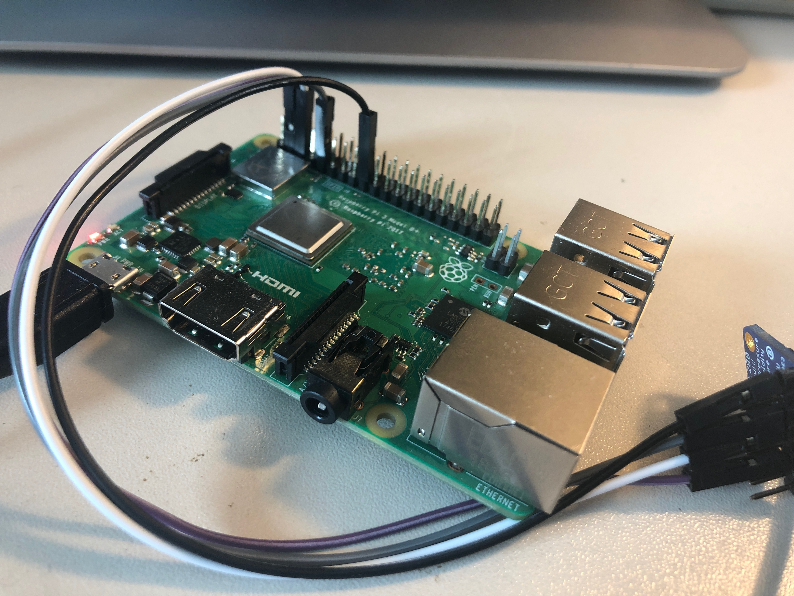
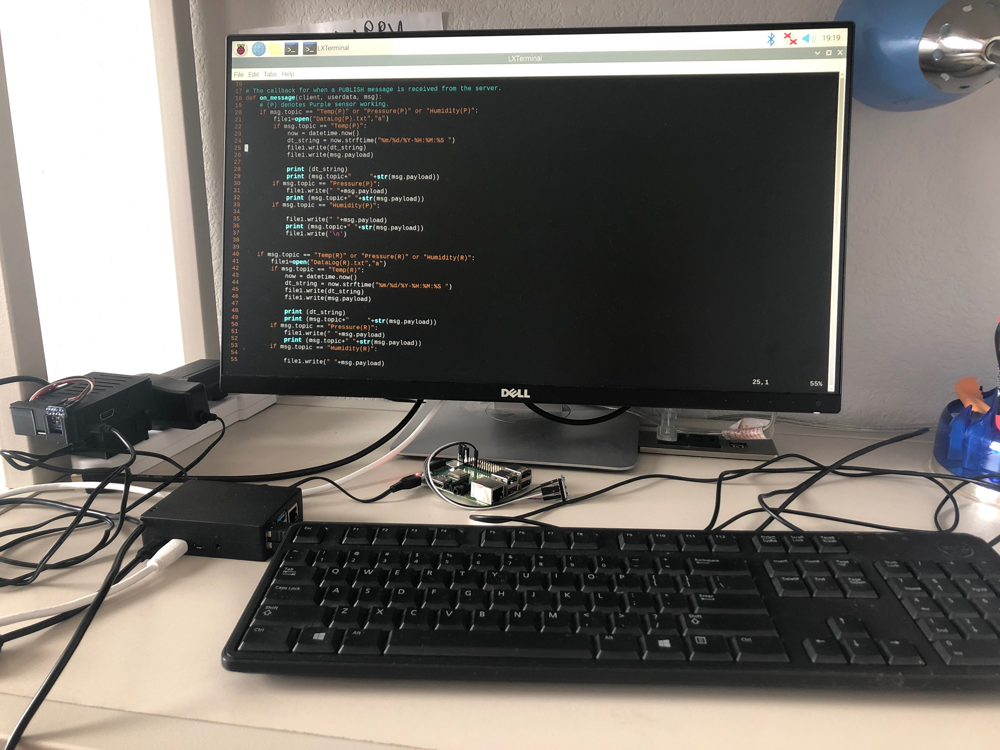
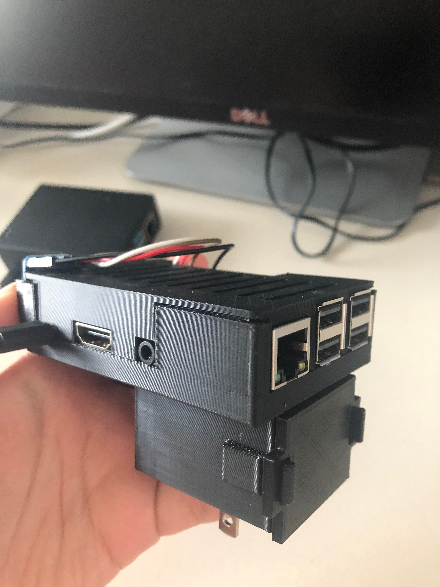

Advanced Particle Detector Laboratory
A quick look into my personal involvement with developing some core functionalities at the APD Lab
Weatherstation Dashboard
The versatility of the raspberry pi allows it to be used in a multitude of ways, specifically Raspberry Pi’s can be used to build modular weather stations to monitor the environment conditions in multiple areas. This project is the creation of a network of raspberry pi’s taking temperature, pressure, and humidity data in the Advanced Particle Detection Lab (APDL) run by the physics department at Texas Tech. An undetermined amount of sensors, each consisting of a raspberry pi and BME280 sensor, make up the data collection end of our system each sensor sends their data back to a hub server which then aggregates the data and allows it to be analyzed at a centrally located terminal. The climate control of the APDL is important because the lab is manufacturing environmentally sensitive radiation sensors, and such the HVAC systems must be monitored closely. In addition to the rooms, there are sensors placed in two dry cabinets that must be kept below a certain humidity level. Due to extenuating circumstances involving the Covid-19 the project is currently left unscaled up and only consists of a pair of sensors, however it does function and was being used to monitor one of the aforementioned cabinets for Moisture purging efficiency. The goal is for this project to complete the network created such that this technology could be duplicated and used by other research labs looking for environmental monitoring.
My involvement in this project currently is to create a secure network of all the sensors and raspberry pi's that allow for the transfer of data in the correct pipeline using the MQTT framework. I have set up the MQTT server with broker enabled publish-subscribe system to direct the data stream to central hub Pi. I am also creating a dashboard for our lab website for real time monitoring of the "weather" conditions. I have used apache as the web server and MySql as the backend of the website to serve as a database for the sensor data and phpmyadmin to facilitate management of the database. Once, this pandemic policies are uplifted I will be working on installing more sensors in the lab and incorporating these sensors in the data-dashboard system.
|  |  |  |
| A worker Pi | My pandemic work station | A 3D printed worker Pi |